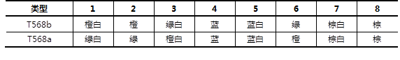

NSD NETWORK DAY03
1 网线的制作
1.1 问题
在常见的计算机网络中，网线主要用来连接计算机与交换机（或宽带路由器）、交换机与交换机、交换机与路由器，以及需要连网的其他各种设备。网线的制作与测试是作为网络管理员的一个入门技能。
- 制作一根直通双绞线
- 制作一根交叉双绞线
1.2 方案
1）EIA/TIA T568b线序规范，如表-1所示。
表－1 EIA/TIA T568双绞线线序规范
2）所需材料及工具
5类UTP（非屏蔽）双绞线：1米x2根。
水晶头：4个。
网线钳：x1个，多人共用。
测线仪：x1个，多人共用。
3）线序分配方案
直通线：T568b<-->T568b（推荐，如图-1所示），或者T568a<-->T568a（不常用） 。
图－1
交叉线：T568b <--> T568a ，如图-2所示。
图－2
1.3 步骤
实现此案例需要按照如下步骤进行。
步骤一：制作双绞线
1）剥线将双绞线的一端插入网线钳的剥线口（末端离刀口长度约3-5厘米），握住网线钳缓慢旋转一圈，去掉外部的套层，可看到相互缠绕的8根芯线，如图-3所示。
图－3
2）理线将裸露的8根双绞线分开，确定是直通线还是交叉线，按照标准线序捋直排列好，并用网线钳将末端剪齐，保留1.2厘米左右，如图-4所示。
图－4
排列好的每条芯线分别对应RJ-45水晶头的1-8针脚，如图-5所示。
图－5
3）压线头将整理好的双绞线芯线平稳捏住（末端保持整齐），插入到RJ-45水晶接头中（塑料卡扣朝下，开口朝向网线），如图-6所示。

图－6
将接好线的水晶头放到网线钳的压线口内（注意要捏住网线，往里顶紧），然后握住网线钳使劲压紧（线与线头不能有松动），如图-7所示，以确保水晶头的铜触片嵌入双绞线的芯线。
图－7
4）制作双绞线的另一端，依次剥线、理线、压线头，操作与前面一样；两端都压制好以后，一根网线就制作完工了，如图-8所示。
图－8
步骤二：测试双绞线的连通性
将做好的双绞线两端分别插入测试仪的RJ-45接口，如图-9所示，打开测试仪的电源开关，观察指示灯以判断网线连通性。
图－9
如果测试仪的8个指示灯按顺序依次亮绿灯，说明连线制作正确；若某些指示灯亮红灯，说明线序可能存在问题；若某个指示灯不亮，说明对应的芯线未连接或接触不良。
对于测试不通过的网线，先确定问题端所在，然后剪掉、重新压制水晶头，直到测试通过以后，此网线才能实际使用。
2 访问及配置交换机
2.1 问题
对于思科交换机来说，主要有2种配置途径：其一，使用交换机自带的Console线缆连接到计算机的COM口，然后利用计算机的超级终端软件直接配置，首次配置通常使用这种方式；其二，通过telnet方式远程访问、配置交换机，这种方式要求此交换机已配置有IP地址且已接入计算机网络，后续课程会学习此访问方式。
- 通过超级终端访问交换机
- 交换机工作模式的进入与退出
- 修改交换机主机名
- 查看交换机配置信息
- 交换机密码配置
2.2 方案
真实设备环境，如图-10所示。
图－１0
本例中的配置练习可采用思科模拟器 —— Cisco Packet Tracer 6.0来实现。
1）安装Packet Tracer 6.2
双击安装包执行默认安装，然后将中文语言文件Chinese.ptl解压到安装目录下的多语言文件夹，比如C:\Program Files (x86)\Cisco Packet Tracer 6.0\languages。
双击桌面的Cisco Packet Tracer快捷方式以启动程序，打开菜单“Options”-->“Preferences”-->切换到“Interface”选项卡-->选择下方的Chinese.ptl-->单击右下角“Change Language”按钮，弹出提示时单击“OK”，如图-11所示。

图－11
关闭当前Packet Tracer程序，然后再重新启动此程序，可发现已经变成中文语言界面了（当前汉化的还不完整），如图-12所示。
图－12
2）建立实验网络拓扑
在Packet Tracer程序主窗口中，添加一台Cisco 2960交换机、一台普通PC机，并添加Console连接、直通网线连接，如图-13所示，确认完毕后将当前拓扑结构保存为c2960-pc.pkt文件。
图－13
其中，连接细节如下：
- 交换机的Console口 <--> PC机的RS 232串口。
- 交换机的FastEthernet0/24接口 <--> PC机的FastEthernet0网卡。
2.3 步骤
实现此案例需要按照如下步骤进行。
步骤一：通过超级终端访问交换机
1）配置并打开超级终端
在此前建立的Packet Tracer实验拓扑环境中，单击PC机以打开此设备，确认电源已启动（机箱示意图上的指示灯为黄绿色），切换到“桌面选项卡”，如图-14所示，找到其中的“终端”并单击打开。
图－14
在弹出的终端配置窗口中，如图-15所示，单击“确定”以接受默认值。
图－15
接下来就可以看到“终端”窗口了，其中显示了通过Console线连接的交换机初始化信息，回车后可进入交换机的“Switch>”配置系统，如图-16所示。
图－16
提示：在Packet Tracer环境中，可直接单击交换机图标，然后切换到“命令行”选项卡，也可以进入IOS配置环境。
步骤二：交换机工作模式的进入与退出
1）交换机工作模式的进入如下：
Switch>enable //切换为特权模式 Switch# configure terminal //进入全局配置模式 Enter configuration commands, one per line. End with CNTL/Z. Switch(config)#interface fastEthernet 0/1 //进入接口模式 Switch(config-if)#
2）交换机工作模式的退出下：
Switch(config-if)#exit //接口模式退到全局配置模式 Switch(config)#exit //全局配置模式退到特权模式 Switch#exit //特权模式退到用户模式 Switch>
步骤三：修改交换机主机名
进入全局配置模式后，使用hostname指令可以为交换机设置主机名。例如，以下操作可以将主机名设置为sw1：
Switch(config)# hostname sw1 //配置主机名 sw1(config)#
步骤四：查看交换机配置信息
查看交换机当前的运行配置：
查看交换机当前的运行配置（或write terminal）： sw1# show running-config //查看当前的运行配置 Building configuration... Current configuration : 1052 bytes ! version 12.2 no service timestamps log datetime msec no service timestamps debug datetime msec no service password-encryption ! hostname sw1 //已配置主机名 ! ! ! ! spanning-tree mode pvst ! interface FastEthernet0/1 ! interface FastEthernet0/2 ! interface FastEthernet0/3 ! interface FastEthernet0/4 ! interface FastEthernet0/5 ! interface FastEthernet0/6 ! interface FastEthernet0/7 ! interface FastEthernet0/8 ! interface FastEthernet0/9 ! interface FastEthernet0/10 ! interface FastEthernet0/11 ! interface FastEthernet0/12 ! interface FastEthernet0/13 ! interface FastEthernet0/14 ! interface FastEthernet0/15 ! interface FastEthernet0/16 ! interface FastEthernet0/17 ! interface FastEthernet0/18 ! interface FastEthernet0/19 ! interface FastEthernet0/20 ! interface FastEthernet0/21 ! interface FastEthernet0/22 ! interface FastEthernet0/23 ! interface FastEthernet0/24 ! interface GigabitEthernet1/1 ! interface GigabitEthernet1/2 ! interface Vlan1 no ip address shutdown ! ! line con 0 ! line vty 0 4 login line vty 5 15 login ! ! end sw1#
步骤五：交换机密码配置
1）设置特权模式口令
包括两种典型的方法（任选其一）：
方法1（明文）：enable password 密码字串
方法2（加密）：enable secret 密码字串
比如，以下操作将明文口令设为cisco、加密口令设置为cisco2960：
sw2960(config)# enable password cisco sw2960(config)# enable secret cisco2960
返回全局配置模式，查看运行配置可观察两种口令设置的差异：
sw2960(config)# end //返回特权模式 sw2960# %SYS-5-CONFIG_I: Configured from console by console sw2960# show running-config //查看当前的运行配置 .. .. ! hostname sw2960 ! enable secret 5 $1$mERr$pUBB1obEqpmMUtC1rBieD1 //加密口令设置 enable password cisco //非加密的口令设置 ! ! .. ..
执行disable切换到用户模式，再执行enable切换到特权模式，此时会要求输入正确的口令才允许进入（如果明文/密文口令都设置了，则密文口令起作用）：
sw2960> enable Password: //尝试明文口令cisco无效 Password: //输入密文口令cisco2960验证成功 sw2960#
2）设置console口令
以下操作配置交换机console口令
Sw2960(config)#line console 0 Sw2960(config-line)#password 123 //设置consol口令 Sw2960(config-line)#login
切换到用户模式，提示输入conslole口令才能再次进入到用户模式：
Sw2960(config-line)#end Sw2960# %SYS-5-CONFIG_I: Configured from console by console Sw2960#exit Sw2960 con0 is now available Press RETURN to get started. User Access Verification Password: